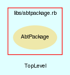

|  |
SystemManager.rb
SystemManager class handles all aspects of the AbTLinux system. It takes care of such tasks as cleanup, fixing, verification and management of settings within the system.
Created by Eric D. Schabell <erics@abtlinux.org> Copyright 2006, GPL.
This file is part of AbTLinux.
AbTLinux is free software; you can redistribute it and/or modify it under the terms of the GNU General Public License as published by the Free Software Foundation; either version 2 of the License, or (at your option) any later version.
AbTLinux is distributed in the hope that it will be useful, but WITHOUT ANY WARRANTY; without even the implied warranty of MERCHANTABILITY or FITNESS FOR A PARTICULAR PURPOSE. See the GNU General Public License for more details.
You should have received a copy of the GNU General Public License along with AbTLinux; if not, write to the Free Software Foundation, Inc., 51 Franklin St, Fifth Floor, Boston, MA 02110-1301 USA
- cleanupLogs
- cleanupPackageSources
- fixPackage
- new
- setCentralRepo
- setPackageTreeLocation
- verifyInstalledFiles
- verifyPackageDepends
- verifyPackageIntegrity
- verifySymlinks
Constructor for the System manager
RETURN SystemManager - an initialized SystemManager object.
[ show source ]
# File SystemManager.rb, line 43
43: def initialize
44: end
All logs for packages not in install list are cleaned off the system.
RETURN boolean - True if completes without error, otherwise false.
[ show source ]
# File SystemManager.rb, line 62
62: def cleanupLogs
63: end
Removes all sources for packages that are not currently installed. Makes use of install listing to determine package sources to keep.
RETURN boolean - True if completes without error, otherwise false.
[ show source ]
# File SystemManager.rb, line 53
53: def cleanupPackageSources
54: end
Fixes the given package.
PARAM String - Package name.
RETURN boolean - True if completes without error, otherwise false.
[ show source ]
# File SystemManager.rb, line 118
118: def fixPackage( package )
119: end
Sets the URI of a central repository for pre-compiled packages.
PARAM String - the URI where the central repository is located.
RETURN boolean - True if the URI is set, otherwise false.
[ show source ]
# File SystemManager.rb, line 129
129: def setCentralRepo( uri )
130: end
Sets the location where the package tree is to be downloaded from, can be set to a local location.
PARAM String - the location of the package tree.
RETURN boolean - True if the package tree location is set, otherwise false.
[ show source ]
# File SystemManager.rb, line 141
141: def setPackageTreeLocation( location )
142: end
Checks if files from given package install list are actually installed.
PARAM String - Package name.
RETURN boolean - True if no installed files are missing, otherwise false.
[ show source ]
# File SystemManager.rb, line 73
73: def verifyInstalledFiles( package )
74: end
Checks the given packages dependencies for missing or broken dependencies.
PARAM String - Package name.
RETURN boolean - True if dependencies intact, otherwise false.
[ show source ]
# File SystemManager.rb, line 95
95: def verifyPackageDepends( package )
96: end
Checks the given packages installed files against the integrity log for changes to installed files.
PARAM String - Package name.
RETURN hash - Empty hash if no problems found, otherwise hash of problem files and their encountered errors.
[ show source ]
# File SystemManager.rb, line 107
107: def verifyPackageIntegrity( package )
108: end
Checks if given packages installed symlinks are broken or missing.
PARAM String - Package name.
RETURN boolean - True if no symlinks found missing or broken, otherwise false.
[ show source ]
# File SystemManager.rb, line 84
84: def verifySymlinks( package )
85: end